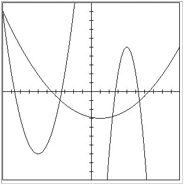

A quadratic function is one of the form f(x) = ax2 + bx + c, where a, b, and c are numbers with a not equal to zero.
The graph of a quadratic function is a curve called a parabola. Parabolas may open upward or downward and vary in "width" or "steepness", but they all have the same basic "U" shape. The picture below shows three graphs, and they are all parabolas.
